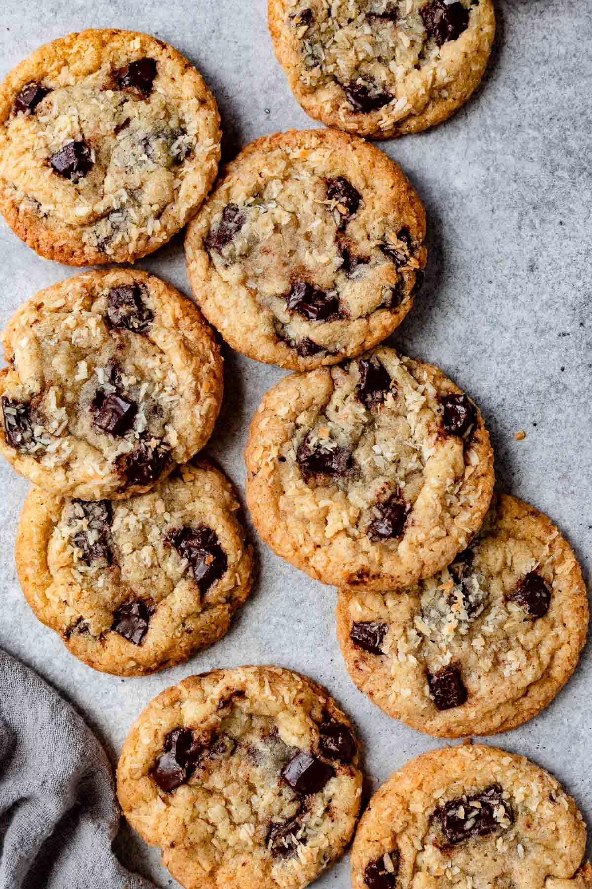

Brown Butter Chocolate Chip Cookie

Description
Brown Butter is so gooood!! It elevates the cookie!
Hershey chocolate might be a little too sweet feel free to use your favorite chocolate. I still liked hershey tho.
Ingredients
- 7 tablespoon of unsalted butter
- 5 tablespoon of salted butter
- 1/2 cup of jaggery/gur
- 3/4 cup of sugar
- 1 large egg yolk
- 1 whole egg
- 1 tablespoon vanilla bean paste
- 1 3/4 cup of flour
- 3/4 teaspoon baking soda
- 4 oz hershey chocolate
Steps
- In a stove on low heat, heat butter until golden brown
- Take off heat, add in gur and sugar and mix.
- Add in egg, egg yolk, and vanilla. Mix and then add flour.
- Mix until it is about to be fully mixed. Add in half of the chopped hershey chocolate.
- Roll cookie dough into similarly sized dough balls. Using tablespoon or melon ball scooper helps.
- Put dough balls in freezer for 30 minutes.
- Bake in oven at 350 for 12 minutes.
- Once out of oven place some of the chopped hershey chocolate on top of each cookie. Let cool before eating.